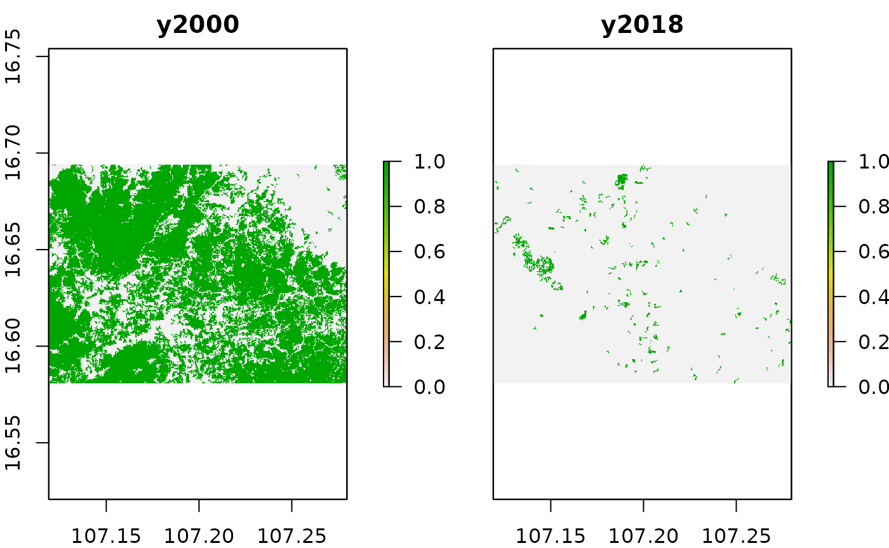
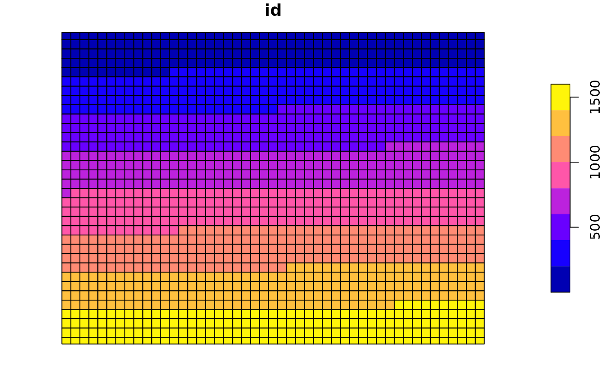
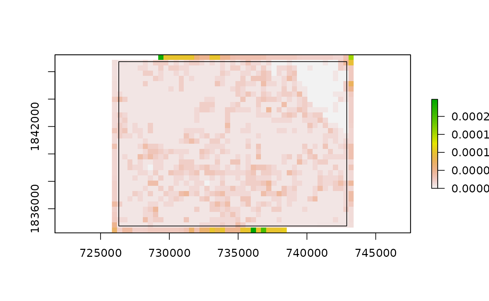
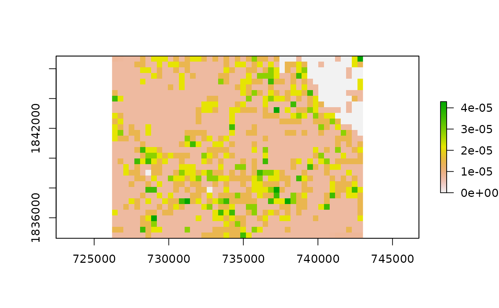

frag_stats.RmdFragmentation statistics area calculated based on the package SDMTools which itself is based on FRAGSTATS (McGarigal et al. 2012). We implemented support for the following indicators:
Available Fragmentation Statistics
| Name | Explanation |
|---|---|
| n.patches | the number of patches of a particular patch type or in a class. |
| total.area | the sum of the areas (m2) of all patches of the corresponding patch type. |
| prop.landscape | the proportion of the total lanscape represented by this class |
| patch.density | the numbers of patches of the corresponding patch type divided by total landscape area (m2). |
| total.edge | the total edge length of a particular patch type. |
| edge.density | edge length on a per unit area basis that facilitates comparison among landscapes of varying size. |
| mean.patch.area | average area of patches. |
| mean.frac.dim.index | mean of fractal dimension index. |
| lanscape.division.index | based on the cumulative patch area distribution and is interpreted as the probability that two randomly chosen pixels in the landscape are not situated in the same patch |
| patch.cohesion.index | measures the physical connectedness of the corresponding patch type. |
| landscape.shape.index | a standardized measure of total edge or edge density that adjusts for the size of the landscape. |
| largest.patch.index | largest patch index quantifies the percentage of total landscape area comprised by the largest patch. |
| sd.patch.area | standard deviation of patch areas. |
| min.patch.area | the minimum patch area of the total patch areas. |
| max.patch.area | the maximum patch area of the total patch areas. |
| perimeter.area.frac.dim | perimeter-area fractal dimension equals 2 divided by the slope of regression line obtained by regressing the logarithm of patch area (m2) against the logarithm of patch perimeter (m). |
| mean.perim.area.ratio | the mean of the ratio patch perimeter. The perimeter-area ratio is equal to the ratio of the patch perimeter (m) to area (m2). |
| sd.perim.area.ratio | standard deviation of the ratio patch perimeter. |
| max.perim.area.ratio | maximum perimeter area ratio. |
| mean.shape.index | mean of shape index |
| sd.shape.index | standard deviation of shape index. |
| min.shape.index | the minimum shape index. |
| max.shape.index | the maximum shape index. |
| sd.frac.dim.index | tandard deviation of fractal dimension index. |
| min.frac.dim.index | the minimum fractal dimension index. |
| max.frac.dim.index | the maximum fractal dimension index. |
| total.core.area | the sum of the core areas of the patches (m2). |
| prop.landscape.core | proportional landscape core |
| mean.patch.core.area | mean patch core area. |
| sd.patch.core.area | standard deviation of patch core area. |
| min.patch.core.area | the minimum patch core area. |
| max.patch.core.area | the maximum patch core area. |
| prop.like.adjacencies | calculated from the adjacency matrix, which shows the frequency with which different pairs of patch types (including like adjacencies between the same patch type) appear side-by-side on the map (measures the degree of aggregation of patch types). |
| aggregation.index | computed simply as an area-weighted mean class aggregation index, where each class is weighted by its proportional area in the landscape. |
| splitting.index | based on the cumulative patch area distribution and is interpreted as the effective mesh number, or number of patches with a constant patch size when the landscape is subdivided into S patches, where S is the value of the splitting index. |
| effective.mesh.size | equals 1 divided by the total landscape area (m2) multiplied by the sum of patch area (m2) squared, summed across all patches in the landscape. |
Each of these indicators is calculated for a given polygon based on the underlying distribution of pixels in a binary forest mask. For this reason, we can easily use the functionality explained in previous vignettes to calculate fragmentation statistics. First, let us read in our data and calculate yearly binary forest cover maps.
# reading data
treeCover = raster(system.file("extdata", "pkgTest_treecover2000.tif", package = "mapme.forest"))
names(treeCover) = "tree.cover"
lossYear = raster(system.file("extdata", "pkgTest_lossyear.tif", package = "mapme.forest"))
names(lossYear) = "loss.year"
# applying preprocessing
treeCover_binary = prepTC(treeCover,
thresholdClump = 10,
thresholdCover = 50)
treeCover_yearly = getTM(treeCover_binary,
lossYear,
2000:2018)
# applying minimal mapping unit for the yearly layers
treeCover_yearly = stack(lapply(1:nlayers(treeCover_yearly), function(l){
treeCover_yearly[[l]] = prepTC(treeCover_yearly[[l]], thresholdClump = 10)
}))
names(treeCover_yearly) = paste("y", 2000:2018, sep = "")
# plotting only first and last layer
plot(treeCover_yearly[[c(1,19)]])
In case you have read the [vignette on areal statistics](vignette(“area_stats”) you should be already familiar with the above code. If not, please read it before continuing to read about the fragmentation statistics.
In the plot above we can already see that our area of interest is characterized by heavy tree cover losses during the last two decades. We should be able to catch this dynamic in our fragmentation statistics as well, since the forest area becomes smaller and more patchy with the time possibly altering the landscape statistics as well.
To calculate fragmentation statistics we developed a routine called FragStatsCalc(). We can either calculate selected indicators from the table above by specifying them in a character vector called FragStats or we simply calculate all indicators by specifying FragStats = "all" which conveniently also is the default setting.
# read in polygons to extract fragmentation statistics for
aoi = st_read(system.file("extdata", "aoi_polys.gpkg", package = "mapme.forest"))## Reading layer `aoi_polys' from data source `/tmp/Rtmpnid9N6/temp_libpathc482fd6cf35/mapme.forest/extdata/aoi_polys.gpkg' using driver `GPKG'
## Simple feature collection with 8 features and 1 field
## geometry type: POLYGON
## dimension: XY
## bbox: xmin: 107.1291 ymin: 16.59741 xmax: 107.2502 ymax: 16.6916
## geographic CRS: WGS 84
frag_statistics = FragStatsCalc(inputRasterFiles = treeCover_yearly,
latlon = T,
polyName = "id",
studysite = aoi,
FragStats = "all",
ncores = 2)
cat("Number of rows: ", nrow(frag_statistics))## Number of rows: 8## Number of columns: 794## Classes 'sf' and 'data.frame': 8 obs. of 23 variables:
## $ patch.density_Dif : num -1.26e-06 -2.13e-07 -8.42e-07 2.27e-07 -1.73e-07 ...
## $ patch.density_Sig : num 0.55941 0.035533 0.007614 0.009046 0.000214 ...
## $ patch.density_Slope: num 0.00 9.67e-08 1.68e-07 4.53e-08 3.03e-07 ...
## $ patch.density_y2000: num 1.26e-06 8.51e-07 1.68e-06 1.59e-06 5.20e-07 ...
## $ patch.density_y2001: num 2.51e-06 8.51e-07 2.74e-06 4.30e-06 5.20e-07 ...
## $ patch.density_y2002: num 2.51e-06 8.51e-07 2.74e-06 4.30e-06 6.94e-07 ...
## $ patch.density_y2003: num 2.51e-06 8.51e-07 2.74e-06 4.30e-06 6.94e-07 ...
## $ patch.density_y2004: num 2.51e-06 8.51e-07 2.95e-06 4.30e-06 6.94e-07 ...
## $ patch.density_y2005: num 2.51e-06 8.51e-07 3.16e-06 4.53e-06 1.73e-06 ...
## $ patch.density_y2006: num 2.51e-06 8.51e-07 3.58e-06 4.53e-06 1.73e-06 ...
## $ patch.density_y2007: num 5.02e-06 8.51e-07 3.58e-06 4.53e-06 1.73e-06 ...
## $ patch.density_y2008: num 8.79e-06 1.06e-06 4.00e-06 4.53e-06 1.73e-06 ...
## $ patch.density_y2009: num 8.79e-06 1.06e-06 4.00e-06 4.53e-06 2.08e-06 ...
## $ patch.density_y2010: num 7.54e-06 3.19e-06 4.21e-06 4.53e-06 2.95e-06 ...
## $ patch.density_y2011: num 7.54e-06 4.04e-06 4.84e-06 4.30e-06 3.64e-06 ...
## $ patch.density_y2012: num 7.54e-06 4.47e-06 4.63e-06 6.34e-06 4.33e-06 ...
## $ patch.density_y2013: num 7.54e-06 4.89e-06 4.84e-06 6.57e-06 4.85e-06 ...
## $ patch.density_y2014: num 7.54e-06 4.68e-06 5.05e-06 7.48e-06 4.85e-06 ...
## $ patch.density_y2015: num 2.51e-06 4.25e-06 4.21e-06 6.12e-06 6.07e-06 ...
## $ patch.density_y2016: num 0.00 3.19e-06 3.37e-06 5.89e-06 5.38e-06 ...
## $ patch.density_y2017: num 0.00 1.91e-06 3.37e-06 4.08e-06 2.77e-06 ...
## $ patch.density_y2018: num 0.00 6.38e-07 8.42e-07 1.81e-06 3.47e-07 ...
## $ geometry :sfc_POLYGON of length 8; first list element: List of 1
## ..$ : num [1:5, 1:2] 107 107 107 107 107 ...
## ..- attr(*, "class")= chr "XY" "POLYGON" "sfg"
## - attr(*, "sf_column")= chr "geometry"
## - attr(*, "agr")= Factor w/ 3 levels "constant","aggregate",..: NA NA NA NA NA NA NA NA NA NA ...
## ..- attr(*, "names")= chr "patch.density_Dif" "patch.density_Sig" "patch.density_Slope" "patch.density_y2000" ...With the above code we calculated all available fragmentation indicators for our eight polygons. The resulting frag_statistics object basically the same sf-object called aoi only with its dataframe amended by 792 variables. We printed the structure of all variables matching the pattern patch.density above. As you can see, the first three parameters are not associated with a year. These parameters are the trend values with Dif representing the difference between the first and last observation (between 2000 and 2018 in the present case), Sig representing the significance and Slope the slope of the sens-slope-trend calculation (click here to learn more about the algorithm behind the sens slope). After these parameters, the values for each specific year are shown. Not that each of the numeric vectors is of length eight, each representing one of the polygons of the aoi object.
Now let us plot the dynamic of some selected indicators over time from 2000 to 2018. We choose the number of patches, the average patch area and the total edge length for visualization. We will not discuss the trend statistics here, so we will drop them from out target data frame. Before handing the data to ggplot2 we need to reshape the data from a wide representation to a long representation (see here for a more thorough discussion of reshaping R dataframes).
# select target variables
target_variables = st_drop_geometry(frag_statistics[grep(paste("id", "n.patches", "total.edge", "mean.patch.area", sep="|"), names(frag_statistics))])
# drop unneeded variables
target_variables = target_variables[,-grep(paste("Dif", "Sig", "Slope", sep="|"), names(target_variables))]
# reshape and plot with dplyr syntax and pipe operator
plt = target_variables %>%
gather("year", "value", -id) %>%
separate(year, into = c("var","year"), "_") %>%
mutate(year = as.factor(str_sub(year, -4, -1)),
id = as.factor(id),
var = as.factor(var)) %>%
ggplot(aes(x=year, y = value)) +
geom_line(aes(color = id, group = id)) +
facet_wrap(~var, scales = "free_y") +
theme_minimal() +
theme(axis.text.x = element_text(angle = 45, hjust = 1))
ggplotly(plt)As we can observe from the plot above, the average patch area is significantly reduced over the years. This is an indicator that the landscape which consisted of a few very large patches became more and more patchy with smaller average areas. This is also observed in the second parameter, the total number of patches. Up until the year 2015 or so, the number of patches increases in almost all polygons from below 10 up to 20 or even above 30. However, the number of patches decreases during the last years which might point towards the complete disappearance of some forest patches towards the end of the observation period. The total length of edges shows a very similar pattern with a steep increase during the first years but an even steeper decrease towards the end of the time series. This too, indicates that a high number of forest patches are completely disappearing.
With this we have demonstrated the calculation and interpretation of some of fragmentation parameters on a polygons basis. Which parameters are important for a certain question, however, remains to be discussed in a specific project context.
As you might have already guessed, the data we obtain by this calculation is hardly suitable for a representation on a map. Of course we could visualize some of the parameters by using a cholorphlet map-style like this:
tmap_mode("view")
tm_basemap("OpenStreetMap") +
tm_shape(frag_statistics) +
tm_polygons("total.core.area_y2000")However, we have a very high number of variables and the spatial information on the variables is not very explicit in a map representation like above. For that reason, we developed an additional workflow which allows you to display the fragmentation statistics in a raster. Of course, this does not come for free but it is associated with several disadvantages and simplifications which are going to discuss now.
The idea behind the visualization as a raster is to treat different zones of the raster as polygons for which to retrieve the fragmentation statistics. When we align theses zones in an ordered fashion we actually create a new raster with a coarser resolution than the original one. The values in the new raster actually represent what is going on in the corresponding cells of the original raster. However, the values will vary based on the decision how we align these zones and how big they are, meaning which resolution we choose for the new raster.
Let us start by creating a regular spaced grid for our study area. Because we will have to specify a resolution for our new raster set it might be a good idea to project our data first to a metric CRS. We are based in Vietnam, so UTM zone 48N seems reasonable.
utm = "+proj=utm +zone=48 +ellps=WGS84 +datum=WGS84 +units=m +no_defs"
treeCover_proj = projectRaster(treeCover_yearly, crs = CRS(utm), method = "ngb")
res(treeCover_proj)## [1] 26.7 27.7This shows us, that after projecting our raster dataset we have a resolution of 26.7 meters in the x direction and a resolution of 27.7 meters in the y direction. Now, we need a grid which`s cell sizes aggregates our original raster by a certain factor. Currently one pixel comprises an read of 740 m². Let us say, we want to aggregate our raster by a factor of 200, that means that our target cells should cover an area of 14.79 ha. We will use that number to calculate how many cells of the original resolution are needed to get one target cell, which is simply put the square root of the aggregation factor. From there, we can calculate how many columns and rows we would get when we simply aggregated the original cells to the coarser resolution. We finally create a matrix by multiplying the number of cells of our original resolution within one unit of our target resolution with the number of columns and rows of our desired target resolution.
agg_factor = 200
n_cells = round(sqrt(agg_factor))
ncols = ceiling(ncol(treeCover_proj) / n_cells)
nrows = ceiling(nrow(treeCover_proj) / n_cells)
m = matrix(nrow = n_cells * nrows, ncol = n_cells * ncols)
cat("Dimension of our target matrix is: ", dim(m))## Dimension of our target matrix is: 476 658## Dimension of our original raster is: 469 658 19We can see that our target matrix is slightly bigger than our original raster. This is because we used the round() and ceiling() function to obtain even numbers which are needed to create a matrix. We will now fill our created matrix in a nested for loop, assigning the same values to cells which comprise one cell in our target resolution. What we need for this is simply the variable n_cells representing the square root of our aggregation factor.
for (i in 1:ncols){
for (j in 1:nrows){
m[(n_cells*j - n_cells + 1) : ((n_cells*(j+1) - n_cells)) , (n_cells*i - n_cells + 1) : (n_cells*(i+1) - n_cells)] = 1 * i * j
}
}Now we have got a matrix which resembles our original raster and assigning a common value to all cells which comprise one cell in our target resolutions. These are the zones we are going to calculate the fragmentation indicators for. There remains one small problem, however, which is that our target matrix currently is slightly larger than our original raster. To account for this, we will simply delete the rows and columns which are to many evenely on all sights fo the matrix. However, that means that we reduce the size of the zones on the edges of the matrix compared to the inner zones. This makes the outer zones incomparable to the inner ones. In practice, this means that we should always calculate the indicators with a raster slightly bigger than our area of interest and crop it in the end.
diff_nrow = nrow(m) - nrow(treeCover_proj)
diff_ncol = ncol(m) - ncol(treeCover_proj)
m = m[(((diff_nrow / 2) ) +1): (nrow(m) - (diff_nrow / 2)) , ((diff_ncol / 2) +1): (ncol(m) - (diff_ncol / 2)) ]
cat("Dimension of our target matrix is: ", dim(m))## Dimension of our target matrix is: 469 658## Dimension of our original raster is: 469 658 19Now, we got a matrix which exactly resembles our original raster and the values in the matrix indicate the zones of our target resolution. What we need now, is to transform this information to an sf-object to be able to calculate the fragmentation statistics as we know it. For this to work, we first have to transform our matrix to a raster. In addition to the raster package we will use some functions from stars and sf, as these work more efficiently when polygonizing raster values.
grid = raster(m)
crs(grid) = crs(treeCover_proj)
extent(grid) = extent(treeCover_proj)
grid_stars = stars::st_as_stars(grid)
polys = st_as_sf(grid_stars[1], as_points = FALSE, merge = T)
polys$id = 1:nrow(polys)
plot(polys["id"]) We will now calculate the fragmentation statistics for each of these polygons just in the same way as we saw it before. Because this command is executed each time the markdown is rendered we will try to speed up the computation time by only calculating one indicator for only one of the layers in the treeCover_proj object.
grid_fragstats = FragStatsCalc(inputRasterFiles = treeCover_proj[[1]],
latlon = F,
polyName = "id",
studysite = polys,
FragStats = "patch.density",
ncores = 2)
results = st_drop_geometry(grid_fragstats)
result_raster = raster(matrix(data = results$patch.density_V1, ncol = ncols, nrow = nrows))
result_raster[] = NA
crs(result_raster) = crs(treeCover_proj)
extent(result_raster) = extent(treeCover_proj)
result_raster = setValues(result_raster, as.matrix(results$patch.density_V1))
plot(result_raster)Now, all that is left is to crop the raster to a smaller extent in order to get rid of the cells on the edge which do not have meaningful values.
bbox = st_as_sfc(st_bbox(result_raster))
bbox_buffer = st_buffer(bbox, dist = -500)
cat("Uncropped raster with buffered extent")## Uncropped raster with buffered extent
## Cropped raster
plot(results_cropped)